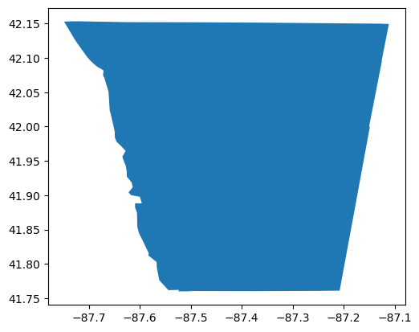
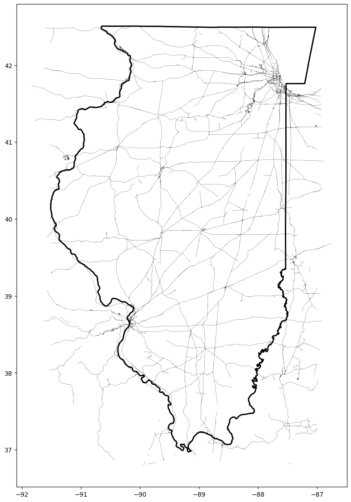
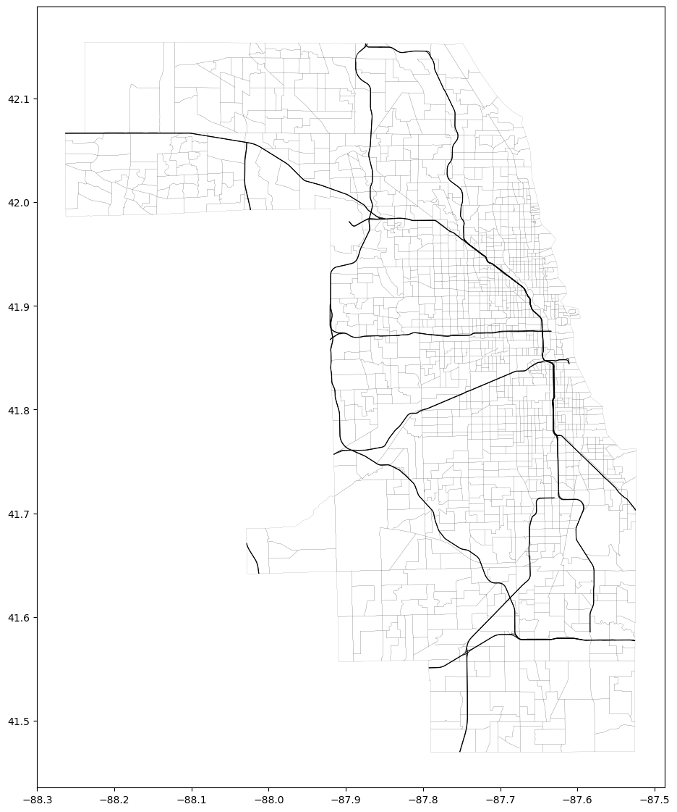

Code
from pathlib import Path
from urllib.request import urlretrieve
from bs4 import BeautifulSoup
import matplotlib.pyplot as plt
import requests
from typing import Dict, List, Union, Optional
import pandas as pd
import geopandas as gpdfrom pathlib import Path
from urllib.request import urlretrieve
from bs4 import BeautifulSoup
import matplotlib.pyplot as plt
import requests
from typing import Dict, List, Union, Optional
import pandas as pd
import geopandas as gpdPOST_DIR = Path(".").resolve()The US Census bureau collects and publishes a massive amount of interesting data, including a lot of rich geospatial data. I want to integrate a lot of these datasets into my personal analytics data warehouse, and in this notebook, I’m going to work on scraping down metadata from geospatial-file-related pages on the Census’s file server.
I’m also a big fan of Geopandas, and I’ll show off some of the things it can do in this notebook.
def request_page(metadata_url: str) -> requests.models.Response:
resp = requests.get(metadata_url)
if resp.status_code == 200:
return resp
else:
raise Exception(f"Couldn't get page metadata for url {metadata_url}")
def scrape_census_ftp_metadata_page(metadata_url: str) -> pd.DataFrame:
resp = request_page(metadata_url=metadata_url)
soup = BeautifulSoup(resp.content, "html.parser")
table = soup.find("table")
rows = table.find_all("tr")
table_contents = []
for row in rows:
cols = row.find_all("td")
cols = [col.text.strip() for col in cols]
table_contents.append(cols)
table_rows = [el for el in table_contents if len(el) > 0]
metadata_df = pd.DataFrame(
[row[1:] for row in table_rows],
columns=["name", "last_modified", "size", "description"],
)
metadata_df["last_modified"] = pd.to_datetime(metadata_df["last_modified"])
metadata_df["is_dir"] = metadata_df["name"].str.endswith("/")
metadata_df["clean_name"] = metadata_df["name"].str.replace("/$", "", regex=True)
metadata_df["is_file"] = (~metadata_df["is_dir"]) & (
metadata_df["clean_name"] != "Parent Directory"
)
while metadata_url.strip().endswith("/"):
metadata_url = metadata_url[:-1]
mask = metadata_df["is_file"] | metadata_df["is_dir"]
metadata_df = metadata_df.loc[mask].copy()
metadata_df["metadata_url"] = (metadata_url + "/" + metadata_df["clean_name"])
return metadata_dftiger_url = "https://www2.census.gov/geo/tiger/"
metadata_url = tiger_url
tiger_top_level_df = scrape_census_ftp_metadata_page(metadata_url=metadata_url)tiger_top_level_df = tiger_top_level_df.sort_values(by="last_modified", ascending=False, ignore_index=True)print(tiger_top_level_df.shape)
tiger_top_level_df.head(10)(60, 8)| name | last_modified | size | description | is_dir | clean_name | is_file | metadata_url | |
|---|---|---|---|---|---|---|---|---|
| 0 | GENZ2020/ | 2023-05-18 20:05:00 | - | True | GENZ2020 | False | https://www2.census.gov/geo/tiger/GENZ2020 | |
| 1 | GENZ2022/ | 2023-04-17 14:38:00 | - | True | GENZ2022 | False | https://www2.census.gov/geo/tiger/GENZ2022 | |
| 2 | TIGER_DP/ | 2023-03-16 11:50:00 | - | True | TIGER_DP | False | https://www2.census.gov/geo/tiger/TIGER_DP | |
| 3 | TGRGDBRD18/ | 2023-01-26 15:28:00 | - | True | TGRGDBRD18 | False | https://www2.census.gov/geo/tiger/TGRGDBRD18 | |
| 4 | TGRGDB18/ | 2023-01-26 11:49:00 | - | True | TGRGDB18 | False | https://www2.census.gov/geo/tiger/TGRGDB18 | |
| 5 | TIGER_RD18/ | 2022-12-05 15:10:00 | - | True | TIGER_RD18 | False | https://www2.census.gov/geo/tiger/TIGER_RD18 | |
| 6 | TIGER2022/ | 2022-11-01 08:09:00 | - | True | TIGER2022 | False | https://www2.census.gov/geo/tiger/TIGER2022 | |
| 7 | TIGER2021/ | 2022-09-01 12:16:00 | - | True | TIGER2021 | False | https://www2.census.gov/geo/tiger/TIGER2021 | |
| 8 | TGRGDB21/ | 2022-08-02 14:48:00 | - | True | TGRGDB21 | False | https://www2.census.gov/geo/tiger/TGRGDB21 | |
| 9 | TGRGDB22/ | 2022-08-02 14:12:00 | - | True | TGRGDB22 | False | https://www2.census.gov/geo/tiger/TGRGDB22 |
tiger_data_dictionary_df = tiger_top_level_df.loc[tiger_top_level_df["is_file"]].copy()
tiger_data_dictionary_df| name | last_modified | size | description | is_dir | clean_name | is_file | metadata_url | |
|---|---|---|---|---|---|---|---|---|
| 17 | Directory_Contents_ReadMe.pdf | 2019-06-25 09:13:00 | 439K | False | Directory_Contents_ReadMe.pdf | True | https://www2.census.gov/geo/tiger/Directory_Co... |
def download_file_from_single_row_metadata_df(file_df: pd.DataFrame, output_dir: Path = POST_DIR) -> Path:
file_name = file_df["clean_name"].values[0]
url = file_df["metadata_url"].values[0]
print(f"file name: {file_name}")
print(f"url: {url}")
file_outpath = output_dir.joinpath(file_name)
if not file_outpath.is_file():
urlretrieve(url, file_outpath)
return file_outpath_ = download_file_from_single_row_metadata_df(file_df=tiger_data_dictionary_df)file name: Directory_Contents_ReadMe.pdf
url: https://www2.census.gov/geo/tiger/Directory_Contents_ReadMe.pdfThere’s not too much additional information in the TIGER subdirectory contents pdf, but I did learn that the GENZ.... prefix is used exclusively for “Cartographic Boundary Files”.
tiger_top_level_df.loc[tiger_top_level_df["name"].str.contains("2022")]| name | last_modified | size | description | is_dir | clean_name | is_file | metadata_url | |
|---|---|---|---|---|---|---|---|---|
| 1 | GENZ2022/ | 2023-04-17 14:38:00 | - | True | GENZ2022 | False | https://www2.census.gov/geo/tiger/GENZ2022 | |
| 6 | TIGER2022/ | 2022-11-01 08:09:00 | - | True | TIGER2022 | False | https://www2.census.gov/geo/tiger/TIGER2022 |
tiger22_url = tiger_top_level_df.loc[
tiger_top_level_df["clean_name"] == "TIGER2022", "metadata_url"
].values[0]
tiger22_url'https://www2.census.gov/geo/tiger/TIGER2022'tiger22_df = scrape_census_ftp_metadata_page(metadata_url=tiger22_url)print(f"Rows in TIGER 2022 page scrapings: {len(tiger22_df)}")
tiger22_df = tiger22_df.sort_values(by="last_modified", ascending=False, ignore_index=True)
tiger22_df.head(10)Rows in TIGER 2022 page scrapings: 45| name | last_modified | size | description | is_dir | clean_name | is_file | metadata_url | |
|---|---|---|---|---|---|---|---|---|
| 0 | UAC/ | 2023-05-11 10:21:00 | - | True | UAC | False | https://www2.census.gov/geo/tiger/TIGER2022/UAC | |
| 1 | CD/ | 2023-05-09 15:41:00 | - | True | CD | False | https://www2.census.gov/geo/tiger/TIGER2022/CD | |
| 2 | PUMA/ | 2022-10-31 19:47:00 | - | True | PUMA | False | https://www2.census.gov/geo/tiger/TIGER2022/PUMA | |
| 3 | PRISECROADS/ | 2022-09-30 22:39:00 | - | True | PRISECROADS | False | https://www2.census.gov/geo/tiger/TIGER2022/PR... | |
| 4 | TRACT/ | 2022-09-30 22:39:00 | - | True | TRACT | False | https://www2.census.gov/geo/tiger/TIGER2022/TRACT | |
| 5 | AREALM/ | 2022-09-30 22:39:00 | - | True | AREALM | False | https://www2.census.gov/geo/tiger/TIGER2022/AR... | |
| 6 | BG/ | 2022-09-30 22:39:00 | - | True | BG | False | https://www2.census.gov/geo/tiger/TIGER2022/BG | |
| 7 | TABBLOCK20/ | 2022-09-30 22:39:00 | - | True | TABBLOCK20 | False | https://www2.census.gov/geo/tiger/TIGER2022/TA... | |
| 8 | COUSUB/ | 2022-09-30 22:39:00 | - | True | COUSUB | False | https://www2.census.gov/geo/tiger/TIGER2022/CO... | |
| 9 | UNSD/ | 2022-09-30 22:39:00 | - | True | UNSD | False | https://www2.census.gov/geo/tiger/TIGER2022/UNSD |
This page has one file (a PDF). Let’s download it and take a look.
tiger22_pdf_df = tiger22_df.loc[tiger22_df["is_file"]].copy()
tiger22_pdf_df| name | last_modified | size | description | is_dir | clean_name | is_file | metadata_url | |
|---|---|---|---|---|---|---|---|---|
| 44 | 2022_TL_Shapefiles_File_Name_Definitions.pdf | 2022-09-01 12:11:00 | 97K | False | 2022_TL_Shapefiles_File_Name_Definitions.pdf | True | https://www2.census.gov/geo/tiger/TIGER2022/20... |
_ = download_file_from_single_row_metadata_df(file_df=tiger22_pdf_df)file name: 2022_TL_Shapefiles_File_Name_Definitions.pdf
url: https://www2.census.gov/geo/tiger/TIGER2022/2022_TL_Shapefiles_File_Name_Definitions.pdfLooking at that PDF, I see that it decodes the names from the scraped tiger2022 page. Some interesting or relevant recodings:
tiger22_addresses_url = tiger22_df.loc[tiger22_df["name"] == "ADDR/", "metadata_url"].values[0]
tiger22_address_features_url = tiger22_df.loc[tiger22_df["name"] == "ADDRFEAT/", "metadata_url"].values[0]
tiger22_address_feature_names_url = tiger22_df.loc[tiger22_df["name"] == "ADDRFN/", "metadata_url"].values[0]
tiger22_area_landmarks_url = tiger22_df.loc[tiger22_df["name"] == "AREALM/", "metadata_url"].values[0]
tiger22_feature_names_url = tiger22_df.loc[tiger22_df["name"] == "FEATNAMES/", "metadata_url"].values[0]
tiger22_water_url = tiger22_df.loc[tiger22_df["name"] == "AREAWATER/", "metadata_url"].values[0]
tiger22_water_edges_url = tiger22_df.loc[tiger22_df["name"] == "LINEARWATER/", "metadata_url"].values[0]
tiger22_rails_url = tiger22_df.loc[tiger22_df["name"] == "RAILS/", "metadata_url"].values[0]
tiger22_roads_url = tiger22_df.loc[tiger22_df["name"] == "ROADS/", "metadata_url"].values[0]
tiger22_tract_url = tiger22_df.loc[tiger22_df["name"] == "TRACT/", "metadata_url"].values[0]tiger22_tract_df = scrape_census_ftp_metadata_page(metadata_url=tiger22_tract_url)The state FIPS code for Illinois is “17”, so I’m going to download that.
tiger22_tract_df.head()| name | last_modified | size | description | is_dir | clean_name | is_file | metadata_url | |
|---|---|---|---|---|---|---|---|---|
| 1 | tl_2022_01_tract.zip | 2022-10-31 19:42:00 | 11M | False | tl_2022_01_tract.zip | True | https://www2.census.gov/geo/tiger/TIGER2022/TR... | |
| 2 | tl_2022_02_tract.zip | 2022-10-31 19:42:00 | 3.0M | False | tl_2022_02_tract.zip | True | https://www2.census.gov/geo/tiger/TIGER2022/TR... | |
| 3 | tl_2022_04_tract.zip | 2022-10-31 19:42:00 | 8.1M | False | tl_2022_04_tract.zip | True | https://www2.census.gov/geo/tiger/TIGER2022/TR... | |
| 4 | tl_2022_05_tract.zip | 2022-10-31 19:42:00 | 10M | False | tl_2022_05_tract.zip | True | https://www2.census.gov/geo/tiger/TIGER2022/TR... | |
| 5 | tl_2022_06_tract.zip | 2022-10-31 19:42:00 | 31M | False | tl_2022_06_tract.zip | True | https://www2.census.gov/geo/tiger/TIGER2022/TR... |
il_tracts_df = tiger22_tract_df.loc[tiger22_tract_df["name"].str.contains("_17_")].copy()
il_tracts_df| name | last_modified | size | description | is_dir | clean_name | is_file | metadata_url | |
|---|---|---|---|---|---|---|---|---|
| 14 | tl_2022_17_tract.zip | 2022-10-31 19:43:00 | 9.5M | False | tl_2022_17_tract.zip | True | https://www2.census.gov/geo/tiger/TIGER2022/TR... |
il_tracts_file_path = download_file_from_single_row_metadata_df(file_df=il_tracts_df)file name: tl_2022_17_tract.zip
url: https://www2.census.gov/geo/tiger/TIGER2022/TRACT/tl_2022_17_tract.zipil_tract_gdf = gpd.read_file(il_tracts_file_path)fig_width = 14
fig, ax = plt.subplots(figsize=(fig_width, fig_width))
ax = il_tract_gdf.plot(facecolor="none", edgecolor="black", linewidth=0.015 * fig_width, ax=ax)
Census tracts sized to have roughly comparable total populations. Looking at the tract boundaries on the map, it’s neat to see all the little pockets of density across the state. Also, it’s interesting to see just how much more densly populated Chicagoland is than the rest of the state; it doesn’t feel so packed.
il_tract_gdf.head(2)| STATEFP | COUNTYFP | TRACTCE | GEOID | NAME | NAMELSAD | MTFCC | FUNCSTAT | ALAND | AWATER | INTPTLAT | INTPTLON | geometry | |
|---|---|---|---|---|---|---|---|---|---|---|---|---|---|
| 0 | 17 | 019 | 010701 | 17019010701 | 107.01 | Census Tract 107.01 | G5020 | S | 5266000 | 30553 | +40.1150269 | -088.0329549 | POLYGON ((-88.05240 40.11923, -88.05238 40.119... |
| 1 | 17 | 019 | 005902 | 17019005902 | 59.02 | Census Tract 59.02 | G5020 | S | 962402 | 4892 | +40.1087344 | -088.2247204 | POLYGON ((-88.22891 40.11271, -88.22882 40.112... |
The County FIPS code for Cook County is “031”. Let’s plot out tracts in Cook County.
cc_tract_gdf = il_tract_gdf.loc[il_tract_gdf["COUNTYFP"] == "031"].copy()fig_width = 14
fig, ax = plt.subplots(figsize=(fig_width, fig_width))
ax = cc_tract_gdf.plot(facecolor="none", edgecolor="black", linewidth=0.015 * fig_width, ax=ax)
There are also filler tracts with essentially no population that just ensure all US land is covered by a tract.
That really large tract has no area on land, and a very large area over water. Let’s filter that out.
cc_tract_gdf["ALAND"].min()0cc_tract_gdf.loc[cc_tract_gdf["ALAND"] == 0]| STATEFP | COUNTYFP | TRACTCE | GEOID | NAME | NAMELSAD | MTFCC | FUNCSTAT | ALAND | AWATER | INTPTLAT | INTPTLON | geometry | |
|---|---|---|---|---|---|---|---|---|---|---|---|---|---|
| 1531 | 17 | 031 | 990000 | 17031990000 | 9900 | Census Tract 9900 | G5020 | S | 0 | 1717072182 | +41.9739391 | -087.4002947 | POLYGON ((-87.74156 42.15323, -87.72176 42.153... |
cc_tract_gdf.loc[cc_tract_gdf["ALAND"] == 0].plot()<Axes: >
cc_tract_land_gdf = cc_tract_gdf.loc[cc_tract_gdf["ALAND"] > 0].copy()fig_width = 14
fig, ax = plt.subplots(figsize=(fig_width, fig_width))
ax = cc_tract_land_gdf.plot(facecolor="none", edgecolor="black", linewidth=0.015 * fig_width, ax=ax)
tiger22_rails_df = scrape_census_ftp_metadata_page(metadata_url=tiger22_rails_url)print(tiger22_rails_df.shape)
tiger22_rails_df.head(2)(1, 8)| name | last_modified | size | description | is_dir | clean_name | is_file | metadata_url | |
|---|---|---|---|---|---|---|---|---|
| 1 | tl_2022_us_rails.zip | 2022-10-31 19:41:00 | 32M | False | tl_2022_us_rails.zip | True | https://www2.census.gov/geo/tiger/TIGER2022/RA... |
rails22_file_path = download_file_from_single_row_metadata_df(file_df=tiger22_rails_df)file name: tl_2022_us_rails.zip
url: https://www2.census.gov/geo/tiger/TIGER2022/RAILS/tl_2022_us_rails.ziprails22_gdf = gpd.read_file(rails22_file_path)print(rails22_gdf.shape)
rails22_gdf.head(2)(124883, 4)| LINEARID | FULLNAME | MTFCC | geometry | |
|---|---|---|---|---|
| 0 | 11020239500 | Norfolk Southern Rlwy | R1011 | LINESTRING (-79.47058 35.44283, -79.46946 35.4... |
| 1 | 11020239501 | Norfolk Southern Rlwy | R1011 | LINESTRING (-79.46687 35.44789, -79.46762 35.4... |
fig_width = 14
fig, ax = plt.subplots(figsize=(fig_width, fig_width))
ax = rails22_gdf.plot(facecolor="none", edgecolor="black", linewidth=0.015 * fig_width, ax=ax)
Ok, let’s see if we can figure out a pattern in the ID values.
I can’t tell if there’s a pattern in the LINEAR_ID id values, but filtering on the extents of the geometries works well enough.
il_mask = (
(rails22_gdf["geometry"].geometry.bounds.maxx > -91.5) &
(rails22_gdf["geometry"].geometry.bounds.minx < -87) &
(rails22_gdf["geometry"].geometry.bounds.miny > 36.8) &
(rails22_gdf["geometry"].geometry.bounds.maxy < 42.5)
)
rails22_gdf.loc[il_mask]| LINEARID | FULLNAME | MTFCC | geometry | |
|---|---|---|---|---|
| 2493 | 11062564039 | Burlington Northern Santa Fe Rlwy | R1011 | LINESTRING (-91.43624 40.58459, -91.43717 40.5... |
| 2495 | 11062564041 | Burlington Northern Santa Fe Rlwy | R1011 | LINESTRING (-91.22472 40.71766, -91.22282 40.7... |
| 2496 | 11062564042 | Burlington Northern Santa Fe Rlwy | R1011 | LINESTRING (-91.40103 40.38701, -91.40241 40.3... |
| 2497 | 11062564043 | Burlington Northern Santa Fe Rlwy | R1011 | LINESTRING (-91.23146 40.70616, -91.23101 40.7... |
| 2498 | 11062564044 | Burlington Northern Santa Fe Rlwy | R1011 | LINESTRING (-91.22472 40.71766, -91.22478 40.7... |
| ... | ... | ... | ... | ... |
| 124629 | 11030539241297 | Indiana Harbor Belt RR | R1011 | LINESTRING (-87.52505 41.62898, -87.52568 41.6... |
| 124630 | 11030539241298 | Chicago South Shore & South Bend RR | R1011 | LINESTRING (-87.59632 41.70761, -87.59657 41.7... |
| 124631 | 11030539241299 | Chicago South Shore & South Bend RR | R1011 | LINESTRING (-87.60260 41.66973, -87.60255 41.6... |
| 124657 | 11030539624884 | Missouri Pacific RR | R1011 | LINESTRING (-88.32004 39.78122, -88.32012 39.7... |
| 124658 | 11030539624943 | Illinois Central RR | R1011 | LINESTRING (-88.30886 39.68084, -88.30897 39.6... |
11949 rows × 4 columns
Let’s get the state boundary from those tract boundaries.
il_state_boundary = il_tract_gdf.copy()
il_state_boundary = il_state_boundary.dissolve(by="STATEFP")
il_state_boundary| geometry | COUNTYFP | TRACTCE | GEOID | NAME | NAMELSAD | MTFCC | FUNCSTAT | ALAND | AWATER | INTPTLAT | INTPTLON | |
|---|---|---|---|---|---|---|---|---|---|---|---|---|
| STATEFP | ||||||||||||
| 17 | POLYGON ((-90.37195 38.31979, -90.37160 38.321... | 019 | 010701 | 17019010701 | 107.01 | Census Tract 107.01 | G5020 | S | 5266000 | 30553 | +40.1150269 | -088.0329549 |
fig_width = 14
fig, ax = plt.subplots(figsize=(fig_width, fig_width))
ax = rails22_gdf.loc[il_mask].plot(facecolor="none", edgecolor="black", linewidth=0.015 * fig_width, ax=ax)
ax = il_state_boundary.plot(facecolor="none", edgecolor="black", linewidth=0.15 * fig_width, ax=ax)
rails22_gdf.head(2)| LINEARID | FULLNAME | MTFCC | geometry | |
|---|---|---|---|---|
| 0 | 11020239500 | Norfolk Southern Rlwy | R1011 | LINESTRING (-79.47058 35.44283, -79.46946 35.4... |
| 1 | 11020239501 | Norfolk Southern Rlwy | R1011 | LINESTRING (-79.46687 35.44789, -79.46762 35.4... |
rails22_gdf["MTFCC"].value_counts(dropna=False)MTFCC
R1011 124883
Name: count, dtype: int64That’s not very interesting. Maybe I should investigate that FEATNAMES file.
tiger22_feature_names_url'https://www2.census.gov/geo/tiger/TIGER2022/FEATNAMES'tiger22_feat_names_df = scrape_census_ftp_metadata_page(metadata_url=tiger22_feature_names_url)print(tiger22_feat_names_df.shape)
tiger22_feat_names_df.head(2)(3235, 8)| name | last_modified | size | description | is_dir | clean_name | is_file | metadata_url | |
|---|---|---|---|---|---|---|---|---|
| 1 | tl_2022_01001_featnames.zip | 2022-10-31 16:05:00 | 300K | False | tl_2022_01001_featnames.zip | True | https://www2.census.gov/geo/tiger/TIGER2022/FE... | |
| 2 | tl_2022_01003_featnames.zip | 2022-10-31 16:05:00 | 888K | False | tl_2022_01003_featnames.zip | True | https://www2.census.gov/geo/tiger/TIGER2022/FE... |
cc_feat_names_df = tiger22_feat_names_df.loc[tiger22_feat_names_df["name"].str.contains("_17031_")].copy()cc_feat_names_file_path = download_file_from_single_row_metadata_df(file_df=cc_feat_names_df)file name: tl_2022_17031_featnames.zip
url: https://www2.census.gov/geo/tiger/TIGER2022/FEATNAMES/tl_2022_17031_featnames.zipfrom zipfile import ZipFilewith ZipFile(cc_feat_names_file_path, "r") as zf:
for fn in zf.filelist:
print(fn)<ZipInfo filename='tl_2022_17031_featnames.cpg' filemode='-rwxrwxr-x' file_size=5>
<ZipInfo filename='tl_2022_17031_featnames.dbf' compress_type=deflate filemode='-rwxrwxr-x' file_size=128309798 compress_size=5694237>
<ZipInfo filename='tl_2022_17031_featnames.shp.ea.iso.xml' compress_type=deflate filemode='-rwxrwxr-x' file_size=55251 compress_size=3165>
<ZipInfo filename='tl_2022_17031_featnames.shp.iso.xml' compress_type=deflate filemode='-rwxrwxr-x' file_size=39111 compress_size=5721>Ok, so it’s just a shapefile like everything else. I guess that makes sense. But it looks like none of the records have a non-null geometry value.
In any case, there’s a LINEARID feature, just like in the rails data, so I suspect I’ll be able to join this to records with linear geometries. And I assume TLID stands for “Topological” (maybe?).
cc_feat_names_gdf = gpd.read_file(cc_feat_names_file_path)print(cc_feat_names_gdf.shape)
cc_feat_names_gdf.head(2)(310676, 19)| TLID | FULLNAME | NAME | PREDIRABRV | PRETYPABRV | PREQUALABR | SUFDIRABRV | SUFTYPABRV | SUFQUALABR | PREDIR | PRETYP | PREQUAL | SUFDIR | SUFTYP | SUFQUAL | LINEARID | MTFCC | PAFLAG | geometry | |
|---|---|---|---|---|---|---|---|---|---|---|---|---|---|---|---|---|---|---|---|
| 0 | 111771547 | 47th Pl Exd | 47th | NaN | NaN | NaN | NaN | Pl | Exd | NaN | NaN | NaN | NaN | 472 | 16 | 110380277026 | S1400 | A | None |
| 1 | 112385480 | Edens Expy Spr | Edens | NaN | NaN | NaN | NaN | Expy | Spr | NaN | NaN | NaN | NaN | 262 | 24 | 1104259027148 | S1100 | A | None |
cc_feat_names_gdf["geometry"].notnull().sum()0tiger22_roads_df = scrape_census_ftp_metadata_page(metadata_url=tiger22_roads_url)print(tiger22_roads_df.shape)
tiger22_roads_df.head(2)(3233, 8)| name | last_modified | size | description | is_dir | clean_name | is_file | metadata_url | |
|---|---|---|---|---|---|---|---|---|
| 1 | tl_2022_01001_roads.zip | 2022-10-31 16:05:00 | 937K | False | tl_2022_01001_roads.zip | True | https://www2.census.gov/geo/tiger/TIGER2022/RO... | |
| 2 | tl_2022_01003_roads.zip | 2022-10-31 16:05:00 | 2.2M | False | tl_2022_01003_roads.zip | True | https://www2.census.gov/geo/tiger/TIGER2022/RO... |
cc_roads22_df = tiger22_roads_df.loc[tiger22_roads_df["name"].str.contains("_17031_")].copy()
cc_roads22_df| name | last_modified | size | description | is_dir | clean_name | is_file | metadata_url | |
|---|---|---|---|---|---|---|---|---|
| 613 | tl_2022_17031_roads.zip | 2022-10-31 16:46:00 | 14M | False | tl_2022_17031_roads.zip | True | https://www2.census.gov/geo/tiger/TIGER2022/RO... |
cc_roads22_file_path = download_file_from_single_row_metadata_df(file_df=cc_roads22_df)file name: tl_2022_17031_roads.zip
url: https://www2.census.gov/geo/tiger/TIGER2022/ROADS/tl_2022_17031_roads.zipcc_roads22_gdf = gpd.read_file(cc_roads22_file_path)print(cc_roads22_gdf.shape)
cc_roads22_gdf.head(2)(76017, 5)| LINEARID | FULLNAME | RTTYP | MTFCC | geometry | |
|---|---|---|---|---|---|
| 0 | 110380277026 | 47th Pl Exd | M | S1400 | LINESTRING (-87.59577 41.81461, -87.59570 41.8... |
| 1 | 1104259027148 | Edens Expy Spr | M | S1100 | LINESTRING (-87.86543 42.14969, -87.86394 42.1... |
fig_width = 18
fig, ax = plt.subplots(figsize=(fig_width, fig_width))
ax = cc_tract_land_gdf.plot(facecolor="none", edgecolor="black", linewidth=0.005 * fig_width, ax=ax)
ax = cc_roads22_gdf.plot(linewidth=0.01 * fig_width, ax=ax)
cc_roads22_gdf.head(2)| LINEARID | FULLNAME | RTTYP | MTFCC | geometry | |
|---|---|---|---|---|---|
| 0 | 110380277026 | 47th Pl Exd | M | S1400 | LINESTRING (-87.59577 41.81461, -87.59570 41.8... |
| 1 | 1104259027148 | Edens Expy Spr | M | S1100 | LINESTRING (-87.86543 42.14969, -87.86394 42.1... |
cc_roads22_gdf["MTFCC"].value_counts(dropna=False)MTFCC
S1400 44317
S1730 22230
S1640 5442
S1630 1240
S1820 883
S1200 599
S1740 450
S1710 377
S1780 259
S1100 191
S1750 28
S1500 1
Name: count, dtype: int64cc_roads22_gdf["RTTYP"].value_counts(dropna=False)RTTYP
M 44839
NaN 30939
S 111
U 71
I 50
O 7
Name: count, dtype: int64pd.crosstab(cc_roads22_gdf["RTTYP"], cc_roads22_gdf["MTFCC"])| MTFCC | S1100 | S1200 | S1400 | S1500 | S1640 | S1710 | S1730 | S1740 | S1780 | S1820 |
|---|---|---|---|---|---|---|---|---|---|---|
| RTTYP | ||||||||||
| I | 48 | 2 | 0 | 0 | 0 | 0 | 0 | 0 | 0 | 0 |
| M | 133 | 426 | 42395 | 1 | 612 | 26 | 1109 | 109 | 25 | 3 |
| O | 0 | 0 | 2 | 0 | 4 | 1 | 0 | 0 | 0 | 0 |
| S | 6 | 104 | 1 | 0 | 0 | 0 | 0 | 0 | 0 | 0 |
| U | 4 | 67 | 0 | 0 | 0 | 0 | 0 | 0 | 0 | 0 |
Hmm.
Based on counts, I infer that RTTYP value M probably stands for Main or Major or Municipal.
Based on the counts and the name scheme for MTFCC, I assume (and have confirmed below) that [MTFCC S1100, RTTYP I] referrs to Interstates.
cc_roads22_gdf.loc[
(cc_roads22_gdf["MTFCC"] == "S1100") & (cc_roads22_gdf["RTTYP"] == "I")
].head()| LINEARID | FULLNAME | RTTYP | MTFCC | geometry | |
|---|---|---|---|---|---|
| 16532 | 1106087288978 | I- 80 | I | S1100 | LINESTRING (-87.52528 41.57698, -87.52567 41.5... |
| 16574 | 1109097585731 | I- 294 | I | S1100 | LINESTRING (-87.91908 41.83601, -87.91904 41.8... |
| 16919 | 1109097861222 | I- 94 | I | S1100 | LINESTRING (-87.63614 41.84582, -87.63601 41.8... |
| 16934 | 11015504130831 | I- 90 | I | S1100 | LINESTRING (-87.62262 41.77505, -87.62338 41.7... |
| 18127 | 1104493001200 | I- 190 | I | S1100 | LINESTRING (-87.84814 41.98372, -87.84868 41.9... |
fig_width = 14
fig, ax = plt.subplots(figsize=(fig_width, fig_width))
ax = cc_roads22_gdf.loc[
(cc_roads22_gdf["MTFCC"] == "S1100") & (cc_roads22_gdf["RTTYP"] == "I")
].plot(facecolor="none", edgecolor="black", linewidth=0.05 * fig_width, ax=ax)
ax = cc_tract_land_gdf.plot(facecolor="none", edgecolor="black", linewidth=0.005 * fig_width, ax=ax)
ToDo: tiger22_address_feature_names_url
tiger22_addresses_df = scrape_census_ftp_metadata_page(metadata_url=tiger22_addresses_url)print(tiger22_addresses_df.shape)
tiger22_addresses_df.head(2)(3226, 8)| name | last_modified | size | description | is_dir | clean_name | is_file | metadata_url | |
|---|---|---|---|---|---|---|---|---|
| 1 | tl_2022_01001_addr.zip | 2022-10-31 16:05:00 | 103K | False | tl_2022_01001_addr.zip | True | https://www2.census.gov/geo/tiger/TIGER2022/AD... | |
| 2 | tl_2022_01003_addr.zip | 2022-10-31 16:05:00 | 507K | False | tl_2022_01003_addr.zip | True | https://www2.census.gov/geo/tiger/TIGER2022/AD... |
cc_addresses22_df = tiger22_addresses_df.loc[tiger22_addresses_df["name"].str.contains("_17031_")].copy()
cc_addresses22_df| name | last_modified | size | description | is_dir | clean_name | is_file | metadata_url | |
|---|---|---|---|---|---|---|---|---|
| 613 | tl_2022_17031_addr.zip | 2022-10-31 16:46:00 | 3.9M | False | tl_2022_17031_addr.zip | True | https://www2.census.gov/geo/tiger/TIGER2022/AD... |
cc_addresses22_file_path = download_file_from_single_row_metadata_df(file_df=cc_addresses22_df)file name: tl_2022_17031_addr.zip
url: https://www2.census.gov/geo/tiger/TIGER2022/ADDR/tl_2022_17031_addr.zipcc_addresses22_gdf = gpd.read_file(cc_addresses22_file_path)print(cc_addresses22_gdf.shape)
cc_addresses22_gdf.head(2)(270921, 11)| TLID | FROMHN | TOHN | SIDE | ZIP | PLUS4 | FROMTYP | TOTYP | ARID | MTFCC | geometry | |
|---|---|---|---|---|---|---|---|---|---|---|---|
| 0 | 111689810 | 3987 | 3999 | R | 60192 | NaN | NaN | I | 4004702369138 | D1000 | None |
| 1 | 111689809 | 4001 | 4083 | R | 60192 | NaN | I | NaN | 4002320013208 | D1000 | None |
tiger22_addr_feats_df = scrape_census_ftp_metadata_page(metadata_url=tiger22_address_features_url)print(tiger22_addr_feats_df.shape)
tiger22_addr_feats_df.head(2)(3226, 8)| name | last_modified | size | description | is_dir | clean_name | is_file | metadata_url | |
|---|---|---|---|---|---|---|---|---|
| 1 | tl_2022_01001_addrfeat.zip | 2022-10-31 16:05:00 | 705K | False | tl_2022_01001_addrfeat.zip | True | https://www2.census.gov/geo/tiger/TIGER2022/AD... | |
| 2 | tl_2022_01003_addrfeat.zip | 2022-10-31 16:05:00 | 2.2M | False | tl_2022_01003_addrfeat.zip | True | https://www2.census.gov/geo/tiger/TIGER2022/AD... |
cc_addr_feats22_df = tiger22_addr_feats_df.loc[tiger22_addr_feats_df["name"].str.contains("_17031_")].copy()
cc_addr_feats22_df| name | last_modified | size | description | is_dir | clean_name | is_file | metadata_url | |
|---|---|---|---|---|---|---|---|---|
| 613 | tl_2022_17031_addrfeat.zip | 2022-10-31 16:46:00 | 16M | False | tl_2022_17031_addrfeat.zip | True | https://www2.census.gov/geo/tiger/TIGER2022/AD... |
cc_addr_feats22_file_path = download_file_from_single_row_metadata_df(file_df=cc_addr_feats22_df)file name: tl_2022_17031_addrfeat.zip
url: https://www2.census.gov/geo/tiger/TIGER2022/ADDRFEAT/tl_2022_17031_addrfeat.zipcc_addr_feats22_gdf = gpd.read_file(cc_addr_feats22_file_path)print(cc_addr_feats22_gdf.shape)
cc_addr_feats22_gdf.head(2)(178057, 26)| TLID | TFIDL | TFIDR | ARIDL | ARIDR | LINEARID | FULLNAME | LFROMHN | LTOHN | RFROMHN | ... | PARITYR | PLUS4L | PLUS4R | LFROMTYP | LTOTYP | RFROMTYP | RTOTYP | OFFSETL | OFFSETR | geometry | |
|---|---|---|---|---|---|---|---|---|---|---|---|---|---|---|---|---|---|---|---|---|---|
| 0 | 608944628 | 224940750 | 223761625 | NaN | 400198243134 | 1104492999121 | State Line Rd | NaN | NaN | 1400 | ... | E | NaN | NaN | NaN | NaN | NaN | I | N | N | LINESTRING (-87.52526 41.59370, -87.52538 41.5... |
| 1 | 608944628 | 224940750 | 223761625 | NaN | 400198243134 | 1104492999533 | State Line Ave | NaN | NaN | 1400 | ... | E | NaN | NaN | NaN | NaN | NaN | I | N | N | LINESTRING (-87.52526 41.59370, -87.52538 41.5... |
2 rows × 26 columns
fig_width = 18
fig, ax = plt.subplots(figsize=(fig_width, fig_width))
ax = cc_tract_land_gdf.plot(facecolor="none", edgecolor="grey", linewidth=0.005 * fig_width, ax=ax)
ax = cc_addr_feats22_gdf.plot(facecolor="none", edgecolor="black", linewidth=0.0025 * fig_width, ax=ax)
tiger22_water_df = scrape_census_ftp_metadata_page(metadata_url=tiger22_water_url)print(tiger22_water_df.shape)
tiger22_water_df.head(2)(3235, 8)| name | last_modified | size | description | is_dir | clean_name | is_file | metadata_url | |
|---|---|---|---|---|---|---|---|---|
| 1 | tl_2022_01001_areawater.zip | 2022-10-31 16:05:00 | 395K | False | tl_2022_01001_areawater.zip | True | https://www2.census.gov/geo/tiger/TIGER2022/AR... | |
| 2 | tl_2022_01003_areawater.zip | 2022-10-31 16:05:00 | 1.7M | False | tl_2022_01003_areawater.zip | True | https://www2.census.gov/geo/tiger/TIGER2022/AR... |
cc_water22_df = tiger22_water_df.loc[tiger22_water_df["name"].str.contains("_17031_")].copy()
cc_water22_df| name | last_modified | size | description | is_dir | clean_name | is_file | metadata_url | |
|---|---|---|---|---|---|---|---|---|
| 613 | tl_2022_17031_areawater.zip | 2022-10-31 16:46:00 | 392K | False | tl_2022_17031_areawater.zip | True | https://www2.census.gov/geo/tiger/TIGER2022/AR... |
cc_water22_file_path = download_file_from_single_row_metadata_df(file_df=cc_water22_df)file name: tl_2022_17031_areawater.zip
url: https://www2.census.gov/geo/tiger/TIGER2022/AREAWATER/tl_2022_17031_areawater.zipcc_water22_gdf = gpd.read_file(cc_water22_file_path)print(cc_water22_gdf.shape)
cc_water22_gdf.head(2)(408, 9)| ANSICODE | HYDROID | FULLNAME | MTFCC | ALAND | AWATER | INTPTLAT | INTPTLON | geometry | |
|---|---|---|---|---|---|---|---|---|---|
| 0 | NaN | 110380386029 | NaN | H2030 | 0 | 66228 | +42.0831253 | -88.1601390 | POLYGON ((-88.16540 42.08249, -88.16533 42.082... |
| 1 | NaN | 110380385201 | Keene Lk | H2030 | 0 | 190257 | +42.1343584 | -88.1469798 | POLYGON ((-88.15463 42.13135, -88.15454 42.131... |
fig_width = 18
fig, ax = plt.subplots(figsize=(fig_width, fig_width))
ax = cc_tract_land_gdf.plot(facecolor="none", edgecolor="grey", linewidth=0.005 * fig_width, ax=ax)
ax = cc_water22_gdf.plot(facecolor="blue", alpha=0.3, edgecolor="black", linewidth=0.0025 * fig_width, ax=ax)